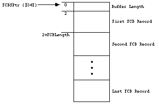
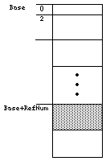
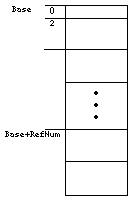

|
|
This Technote, originally
FL 6 - HFS Elucidations, describes a few
problems that may occur while using Hierarchical File System (HFS). It
also describes ways to avoid these problems.
This Note is important for developers who need to address debugging
issues involving HFS. This is as important now as it was when the Note
was originally published.
The Note discusses the following problems:
It is very important to be careful about how files are opened and
closed. There must be no more than one close for every open. Don't use driver names, like .Bout, .Print or .Sony,
in place of file names, or the system may become confused.
Each of these can lead to strange occurrences, as well as problems for
users. Performing any or all of these marginally-illegal operations will
not necessarily lead to a System Error. In some cases, the confusion
generated may be worse than a System Error.
Updated: [Dec 20 1996]
|
One Close is Always Enough
If a file is closed twice, it is possible to corrupt the file system on
a disk. Without a clear understanding of how the file system allocates
access paths to files that are currently open, it is possible to adopt a
rather cavalier attitude about opening and closing files. This Note
explains why it is necessary to be very careful about opening and
closing files.
When the File Manager receives an Open call, it will look at the
parameters passed in the parameter block and create a new access path
for the file that is being opened. The access path is how the File
Manager keeps track of where to send data that is written, and where to
get data that is read from that file. An access path is nothing more than:
- a buffer that the file system uses to read and write data, and
- a File Control Block that describes how the file is stored on a disk.
A call such as:
will create the access path as a buffer and a File Control Block (FCB)
in the FCB buffer. The term "FCB buffer" is used in most documentation,
although it actually behaves more like an array than a buffer. However,
to avoid confusion, this Technote will continue to use the term "FCB
buffer," although "FCB array" would be a better description.
|
Note:
The following example is here for illustrative purposes only;
dependence on it may cause compatibility problems with future system software.
|
The FCBSPtr is a low-memory global (at 0x034E)
that holds the address of
a nonrelocatable block. That block is the File Control Block buffer, and
is composed of the two byte header which gives the length of the block,
followed by the FCB records themselves. The records are of fixed length,
and give detailed information about an open file. The structure of the
queue can be visualized as:

As depicted, any given record can be found by adding the length of the
previous FCB records to the start of the block, adding 2 for the two
byte header; giving an offset to the record itself. The size of the
block, and hence the number of files that can be open at any given time,
is determined at startup time and expanded on demand later. The call to
open the file referenced by fsspec above, will produce the file
reference number (which refers to the access path to the file) in
firstRefNum. This is the number that will be used to access that file
from that point on. The File Manager passes back an offset into the FCB
buffer as the reference number (RefNum). This offset is the number of
bytes past the beginning of the queue to that FCB record in the buffer.
That FCB record will describe the file that was opened. An example of a
number that might get passed back as a RefNum is $1D8.
That also means
that the FCB record is $1D8 bytes into the FCB block.
A visual example of a record in use, and how the RefNum relates is:

Base is merely the address of the nonrelocatable block that is the FCB
buffer. FCBSPtr points to it. The RefNum (a number like $1D8)
is added to Base, to give an address in the block.
That address is what the file
system will use to read and write to an open file, which is why you are
required to pass the RefNum to the PBRead and PBWrite calls.
So RefNum is merely an offset into the buffer.
Let's step through a dangerous imaginary sequence and see what happens
to a given record in the FCB buffer. Here's the sequence we will step through:
ErrStuff = FSpOpenDF (fsspec, permission, firstRefNum);
ErrStuff = FSClose ( firstRefNum );
ErrStuff = FSpOpenDF (secondFileSpec, permission, secondRefNum);
ErrStuff = FSClose ( firstRefNum ); {the wrong file gets closed!!!}
{the above line will close 'SecondFile', not 'FirstFile', which is
already closed}
|
|
Before any operations, the record at $1D8 is not used.

After the call:
firstRefNum = $1D8 and the record is in use.

After the call:
firstRefNum is still equal to $1D8, but the FCB record is unused.
After the call:
SecondRefNum = $1D8, FirstRefNum = $1D8, and the record is reused.
After the call:
The firstRefNum = $1D8, secondRefNum = $1D8, and the FCB buffer element
is cleared. This happens even though firstFile was already closed.
Actually, secondFile was closed:

|
Note:
The second close is using the old RefNum. The second close will still
close a file, and in fact will return noErr as its result. Any
subsequent accesses to the secondRefNum will return an error, since the
file 'secondFile' was closed. The File Control Blocks are reused, and
since they are just offsets, it is possible to get the same file RefNum
back for two different files. In this case, firstRefNum == secondRefNum
since 'firstFile' was closed before opening 'secondFile' and the same
FCB record was reused for 'secondFile'.
|
There are any number of nasty cases that can arise if a file is closed
twice, reusing an old RefNum. A common programming practice is to have
an error handler or cleanup routine that goes through the files that a
program creates and closes them all, even if some may already be closed.
If an FCB element was not reused, the Close will return the expected
fnOpnErr. If the FCB had been reused, then the Close could be closing
the wrong file. This can be very dangerous.
As a particularly nasty example, think of what can happen if a program
were to close a file, then the user inserted an HFS floppy disk. The FCB
could be reused for the Catalog File on that HFS disk. If the program
had a generic error handler that closed all of its files, it could
inadvertently close "its" file again. If it thought "its" file was still
open it would do the close, which could close the Catalog file on the
HFS disk. This is catastrophic for the disk since the file could easily
be closed in an inconsistent state. The result is a bad disk that needs
to be reformatted.
Avoiding the Problem of Overwriting The FCB Record
A very simple technique is to merely clear the RefNum after each close.
If the variable that the program uses is cleared after each close, then
there is no way of reusing a RefNum in the program. An example of this
technique would be:
ErrStuff = FSpOpenDF (firstFileSpec, permission, firstRefNum);
ErrStuff = FSClose (firstRefNum);
firstRefNum = 0; { We just closed it, so clear our refnum }
ErrStuff = FSpOpenDF (secondFileSpec, permission, secondRefNum);
ErrStuff = FSClose (firstRefNum); { returns an error }
|
This makes the second Close pass back an error. In this case, the second
close will try to close RefNum = 0, which will pass back a rfNumErr and
do no damage.
|
Note:
Be sure to use 0, which will never be a valid RefNum, since the
first FCB entry is beyond the FCB buffer length word. Don't confuse this
with the 0 that the Resource Manager uses to represent the System file.
|
Thus, if an error handler were cleaning up possibly open files, it could
blithely close all the files it knew about, since it would legitimately
get an error back on files that are already closed. This is not done
automatically, however. The programmer must be careful about the opening
and closing of files. The problem can get quite complex if an error is
received halfway through opening a sequence of ten files, for example.
By merely clearing the RefNum that is stored after each close, it is
possible to avoid the complexities of trying to track which files are
open and which are closed.
This .filename Looks Outrageous
There is a potential conflict between file names and driver names when
using deprecated Open calls, such as FSOpen, PBHOpen
and PBOpen. If a
file name is something like .Bout, .Print or .Sony, then the call will
open the corresponding driver instead of the file. Drivers have priority
and will always be opened before a file of the same name. This may mean
that an application will get an error back when opening these types of
files, or worse, it will get back a driver RefNum from the call. What
the application thought was a file open call was actually a driver open
call. If the program uses that access path as a file RefNum, it is
possible to get all kinds of strange things to happen. For example, if
.Sony is opened, the Sony driver's RefNum would be passed back, instead
of a file RefNum. If the application does a Write call using that
RefNum, it will actually be a driver call, using whatever parameters
happen to be in the parameter block. Disks may be searching for new life
after this type of operation. If a program creates files, it should not
allow a file to be created whose name begins with '.'.
|
Important:
This problem never occurs when using the new Open calls, such as
FSOpenDF and PBHOpenDF. For this reason,
it is strongly recommended that
these Open calls be used instead of FSOpen.
|
References
Inside Macintosh: Files, Ch 2, File Manager
Technical Note FL22 - HFS Ruminations
Back to top
Downloadables
|

|
Acrobat version of this Note (132K).
|
Download
|
Back to top
|